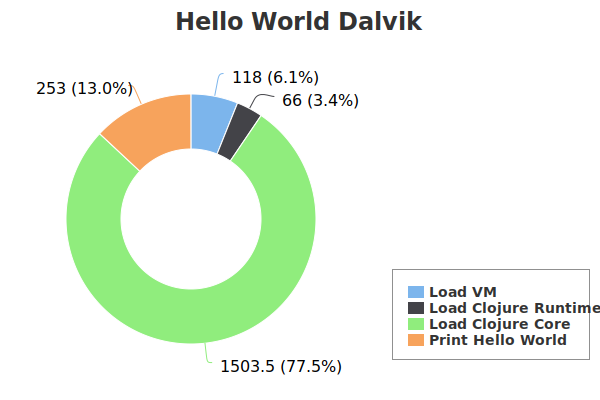
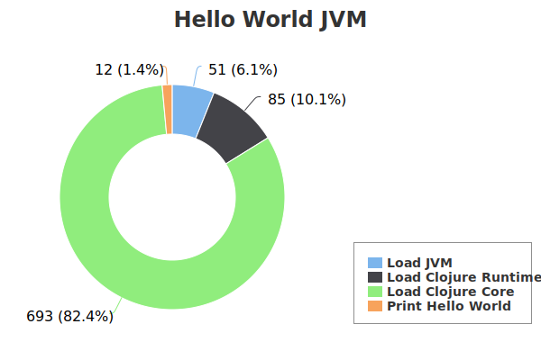
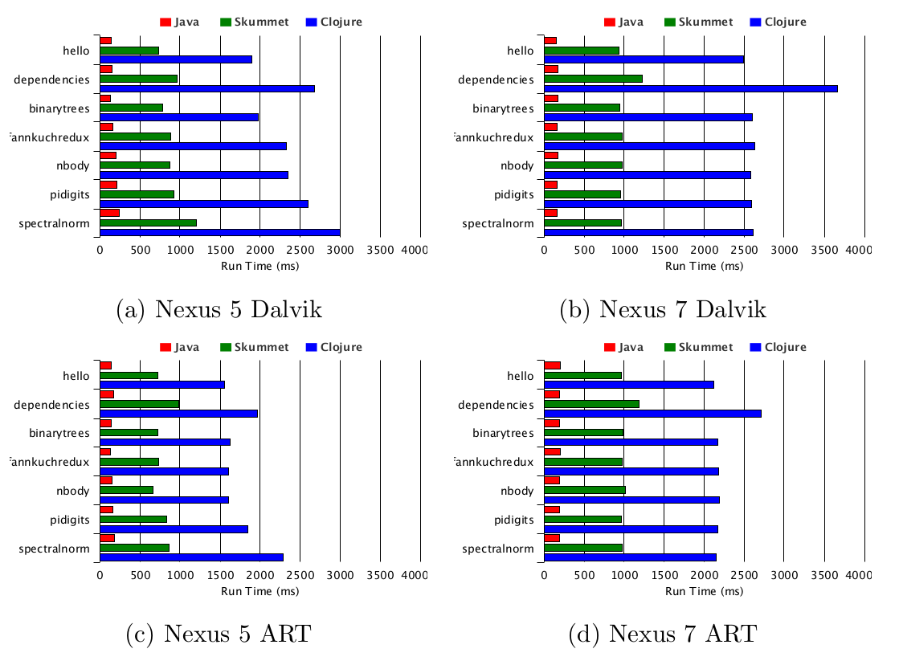
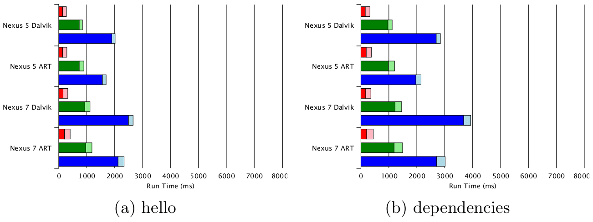
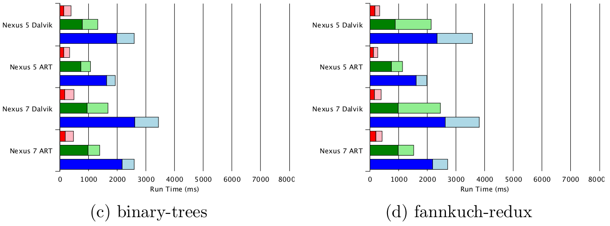
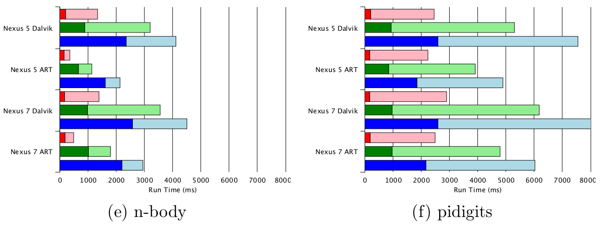
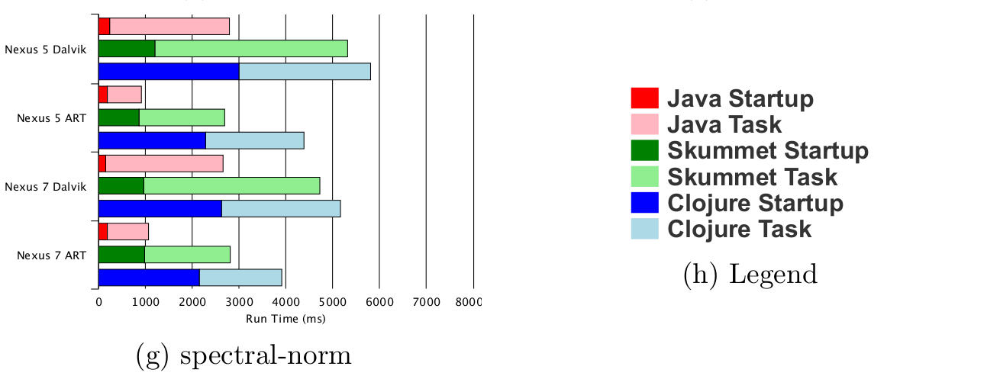

Clojure on Android
Nicholas Kariniemi
Master's Thesis
Aalto University 2015.4.10
Supervisor: Professor Jukka Nurminen
Advisor: Dr. Vesa Hirvisalo
What I'm talking about
- The Why of Clojure on Android
- The Why Not of Clojure on Android
- Benchmarking results
- Explanation
- Lean Clojure on Android
- The Big Idea
- Benchmarking results
- Conclusions: The State of Clojure on Android
Why Clojure on Android?
Why Android?
- Most widely used mobile OS
- Likely to grow with Internet of Things
iOS
Swift
Swift is an innovative new programming language for Cocoa and Cocoa Touch. Writing code is interactive and fun, the syntax is concise yet expressive, and apps run lightning-fast. Swift is ready for your next iOS and OS X project — or for addition into your current app — because Swift code works side-by-side with Objective-C.
Windows Phone
F# is a mature, open source, cross-platform, functional-first programming language. It empowers users and organizations to tackle complex computing problems with simple, maintainable and robust code.
Android

Android development uses an outdated language.
There are no officially-supported alternatives.
How about Clojure?
Clojure : a functional, dynamic, Lisp with good concurrency support that runs on the JVM
Why Clojure on Android?
Why Clojure on Android? Clojure plays nice with Java
(ns com.android.helloworld.HelloWorld
(:gen-class
:extends android.app.Activity
:exposes-methods {onCreate superOnCreate})
(:import [android.app Activity]
[android.os Bundle]))
(defn -onCreate [this #^android.os.Bundle bundle]
(.superOnCreate this bundle)
(.setContentView this com.android.helloworld.R$layout/main))
- Clojure compiles to JVM bytecode like Java
- and has good interop with Java
Why Clojure on Android? Functional goodness
(defn fetch-users []
(->> users
Observable/from
(rx/drop 1)
(rx/map clojure.string/lower-case)
(rx/map (fn [v] {:id 1234 :name v}))
(rx/map to-json)))
Android Java: Verbose anonymous classes
public static Observable fetchUsers(){
return Observable.from(userNames)
.skip(1)
.map(new Func1<String, String>() {
@Override
public String call(String userName){
return userName.toLowerCase();
}
})
.map(new Func1<String, HashMap<String, String>>() {
@Override
public HashMap<String, String> call(String userName){
HashMap<String, String> map = new HashMap<String, String>();
map.put("id", "1234");
map.put("name", userName);
return map;
}
})
.map(new Func1<HashMap<String, String>, String>() {
@Override
public String call(HashMap<String, String> userData){
return toJson(userData);
}
});
}
Why Clojure on Android? Data as code
(def main-view
[:linear-layout {:orientation :vertical}
[:linear-layout {:orientation :horizontal}
[:text-view {:text "Location: "}]
[:text-view {:def `location-text :text ""}]]
[:linear-layout {:orientation :horizontal}
[:text-view {:text "Signal strength: "}]
[:text-view {:def `strength-text :text ""}]]
[:linear-layout {:orientation :horizontal}
[:text-view {:text "Carrier: "}]
[:text-view {:def `carrier-text :text ""}]]])
(defactivity org.antenna.MainActivity
:def main-activity
:on-create (fn [this bundle]
(on-ui (set-content-view! main-activity (make-ui main-view)))
(display-and-send-current-data main-activity)))
Android Java: XML + extended Java classes
<FrameLayout xmlns:android="http://schemas.android.com/apk/res/android"
android:id="@+id/contactinfoview"
android:layout_width="match_parent"
android:layout_height="match_parent"
android:gravity="center"
android:clickable="true"
android:background="@color/tb_background_grey"
android:orientation="vertical">
<LinearLayout
android:layout_width="match_parent"
android:layout_height="wrap_content"
android:orientation="vertical">
<LinearLayout
android:id="@+id/upperlayout"
android:layout_width="match_parent"
android:layout_height="wrap_content">
<LinearLayout
android:layout_width="match_parent"
android:layout_height="wrap_content"
android:layout_marginTop="71dp"
android:layout_marginLeft="228dp"
android:layout_marginRight="228dp"
android:orientation="horizontal">
<FrameLayout
android:layout_width="140dp"
android:layout_height="114dp">
...
Why Clojure on Android?
- Immutability as default + immutable data structures
- Sensible concurrency: STM, core.async
- Dynamic development
(ns com.android.helloworld.HelloWorld
(:gen-class
:extends android.app.Activity
:exposes-methods {onCreate superOnCreate})
(:import [android.app Activity]
[android.os Bundle]))
(defn -onCreate [this #^android.os.Bundle bundle]
(.superOnCreate this bundle)
(.setContentView this com.android.helloworld.R$layout/main))

What do you think is Clojure's most glaring weakness / blind spot / problem?
2013 State of Clojure Survey (Chas Emerick)
- slow start-up time of jvm
- JVM Prejudice, I used to have such against Java. JVM startup time still sucks
- its usefulness in many potential applications is limited by the jvm's startup time
- start up time and deployed package size (these are related, and not just the jvm's fault)
- That damn jvm startup time
- It's partly because of the JVM, but clojure programs are really slow to start
- JVM startup overhead, documentation
- JVM bootstrap time
- Language runtime bootstrapping takes way too much time, which renders the otherwise desirable scripting story impractical.
- Startup time for quick scripts (and I'm not a fan of the various 'hot JVM' solutions)
2013 State of Clojure Survey Responses
Alex Miller analysis of 2013 State of Clojure survey:
"By far the largest subset of performance-related complaints were about JVM startup time. Phil Hagelberg has also reported that this is one of, perhaps the highest, complaint of leiningen users as well.... JVM startup time is never going to go away..., but there are likely still things that can be done to decrease Clojure loading time or better control the loading of code"


Responses: How to speed up startup time (1)
- David Nolen: Try the client JVM.

Responses: How to speed up startup time (2)
- Try the client JVM.
- Try warming up Clojure first.

Responses: How to speed up startup time (3)
- Try the client JVM.
- Try AOT compilation.
- Try using a persistent JVM.

Hello World benchmark
(ns com.android.helloworld.HelloWorld
(:gen-class
:extends android.app.Activity
:exposes-methods {onCreate superOnCreate})
(:import [android.app Activity]
[android.os Bundle]))
(defn -onCreate [this #^android.os.Bundle bundle]
(.superOnCreate this bundle)
(.setContentView this com.android.helloworld.R$layout/main))
- Displays a text field with "Hello world"
- i.e. does almost nothing (but in Clojure)
Hello World benchmark
(ns com.android.helloworld.HelloWorld
(:gen-class
:extends android.app.Activity
:exposes-methods {onCreate superOnCreate})
(:import [android.app Activity]
[android.os Bundle]))
(defn -onCreate [this #^android.os.Bundle bundle]
(.superOnCreate this bundle)
(.setContentView this com.android.helloworld.R$layout/main))
- Displays a text field with "Hello world"
- i.e. does almost nothing
Hello world benchmark: JVM vs Dalvik
But that's Dalvik. I'll use ART!
(Dalvik is the Android virtual machine for versions up to KitKat/4.4.
ART is the new virtual machine starting with Lollipop/5.0.)
Hello world benchmark: Dalvik vs ART
But that's just one device! Other devices might be faster!
Hello world benchmark: Nexus 5 vs Nexus 7
But that's just a silly little hello world app.
Real apps are different!
Hello vs Dependencies benchmark
Hello benchmark: Dependencies benchmark:Dependencies benchmark
(ns benchmark.dependencies
(:gen-class)
(:require [rx.lang.clojure.core :as rx]
[rx.lang.clojure.blocking :as rxb]
[cognitect.transit :as transit]
clojure.string)
(import [java.io ByteArrayOutputStream]
rx.Observable))
(defn to-json [input]
(let [out (ByteArrayOutputStream. 4096)
writer (transit/writer out :json)]
(transit/write writer input)
(.toString out)))
(def users ["Tom" "Dick" "Harry"])
(defn fetch-users []
(->> users
Observable/from
(rx/drop 1)
(rx/map clojure.string/lower-case)
(rx/map (fn [v] {:id 1234 :name v}))
(rx/map to-json)))
(defn -main [& args]
(let [users-json (fetch-users)]
(rxb/doseq [user users-json] (println user))))
Summary
- Clojure on Android apps start slowly (2s minimum)
- ...even on ART (1.5s minimum)
- ...and it scales upwards quickly (deps benchmark: 2-2.7s)
Why?!?!


Rich Hickey, the creator of Clojure
(as quoted by David Nolen)
Clojure Hello World Breakdown
 - Loading virtual machine: ~6% of time (50-120 ms)
- Loading Clojure core: ~80% of time (700-1500 ms)
What is "Clojure core"?
- The Clojure language = mostly functions
- Functions are wrapped in vars.
- Var: pointer to a value
- Vars are dynamic: they can be given new values
- Vars are organized by namespaces.
- The clojure.core namespace defines most Clojure functions
- e.g. when, =, and, or
- e.g. basic data structures like vectors, maps, sets
Why is loading Clojure core so slow?
- You need to set up those vars somewhere.
- Clojure sets up vars when a namespace is loaded.
- Loading clojure.core namespace bootstraps the language.

core__init.class
- Clojure core = clojure.core namespace
~= JVM class file core__init.class - Decompiled core__init.class looks like this:
static { // Create vars and metadata (11/17%)
__init0();
__init1();
// ...
__init23();
Compiler.pushNSandLoader(Class.forName("clojure.core__init").getClassLoader()); // (0%)
try {
load(); // Assign vars and metadata, load external functions (89/83%)
Var.popThreadBindings(); // (0%)
} finally {
Var.popThreadBindings(); // (0%)
throw finally;
}
}
Var const__cons = RT.var("clojure.core", "cons");
AFn const__consMeta = RT.map(metaForCons);
const__cons.setMeta(const__consMeta);
const__cons.bindRoot(new core.cons());
Clojure namespace
- Namespace: mapping from symbol to var (to value)
- So if you use a function in your program:
- The decompiled JVM bytecode looks like this:
- Note indirection: fetch namespace, fetch var, fetch value, invoke
(cons 1 '(2 3))
RT.var("clojure.core", "cons").getRawRoot().invoke(args);
Why use dynamic vars? Clojure is dynamic
- Dynamism is a Good Thing*
- Dynamic vars (and namespaces) allow you to redefine variables at run time without recompiling
- REPL-driven development
- Short feedback loops
- Iterative testing
- Develop software while it's running
Clojure dynamism
Dynamic typing. Yes but no. We're not talking about that.- Dynamic: available at run time (not just compile time)
- Clojure is dynamic because it lets you do more stuff at run time
- Dynamic binding
- + reified language constructs
- + dynamic compilation & evaluation
- --> Dynamic development (REPL)
Reification: turning a compiler detail into something you can play with at run time
Dynamic var binding
; Create a Var and bind its root to the value 1
hello.core=> (def foo 1)
#'hello.core/foo
hello.core=> (def print-foo (fn [] (println foo)))
#'hello.core/print-foo
; Print by looking up runtime value of var
hello.core=> (print-foo)
1
nil
hello.core=> (def foo 2)
#'hello.core/foo
; It still works if we change the var value
hello.core=> (print-foo)
2
Dynamic namespace binding
; Create ns (compile to JVM class, load into JVM)
user=> (ns hello)
nil
; Compile function at run time to JVM class
; Insert it into existing namespace
hello=> (defn helloworld [] (println "Hey world!"))
#'hello/helloworld
; Execute normally
hello=> (helloworld)
Hey world!
nil
; Or call it manually using underlying JVM classes
hello=> (clojure.lang.RT/var "hello" "helloworld")
#'hello/helloworld
hello=> (.getRawRoot (clojure.lang.RT/var "hello" "helloworld"))
#<hello$helloworld hello$helloworld@2b5071f6>
hello=> (.invoke (.getRawRoot (clojure.lang.RT/var "hello" "helloworld")))
Hey world!
nil
; Inspect reified namespace
; Symbol 'helloworld in namespace hello
; points to a Var with a root binding of
; our defined function
hello=> (ns-publics 'hello)
{helloworld #'hello/helloworld}
REPL-driven development
user=> (start-system)
Connected to mongo at localhost: grub-dev
Started server on localhost: 3000
user=> system
{:db-name "grub-dev"
:db #<DBApiLayer grub-dev>
:db-conn #<MongoClient ...>
:port 3000
:stop-server #<clojure.lang.AFunction$1@7ed72ded>,
:states #<Atom@610863a9:
[{:tag 0
:grubs { :grub-167afa69-f812-455a-bb8a-4b819236011a
{:id "grub-167afa69-f812-455a-bb8a-4b819236011a"
:text "Milk"
:completed false}}}]>}
user=> (reset! (:states system) [])
[]
user=> system
{ :db-name "grub-dev"
:db #<DBApiLayer grub-dev>
:db-conn #<MongoClient ...>
:port 3000
:stop-server #<clojure.lang.AFunction$1@7ed72ded>,
:states #<Atom@610863a9: []>}
(Stuart Sierra "Reloaded" workflow)
Which is like swapping your engine while driving
But is dynamism always a Good Thing?
- The magic depends on dynamic binding
- i.e. somewhere we need to set up namespaces and vars to point to the right things
- Clojure does it on startup -> Slow startup
So how can we make Clojure start fast?
Lean Clojure
- Idea: trade dynamic features for performance
- Dynamism for development, not production
- Drop:
- Dynamic binding of vars, namespaces
- Dynamic compilation
- Dynamic development
- Gain:
- Startup speed
- Execution speed
- Reduced memory usage
Lean Clojure Projects: Oxcart and Skummet
- Google Summer of Code 2014
- Oxcart
- Based on experimental Clojure in Clojure compiler
- Developed by Reid McKenzie
- Compiles a limited subset of Clojure -> can't test
- Skummet
- Based on standard compiler
- Developed by Alexander Yakushev
- Changes:
- Mutable vars -> static class fields
- (metadata trimming)
- (no emission of macros)
Skummet in one diagram

Skummet
- Main change: mutable vars -> static class fields
- What we (hope to) get:
- Faster startup time from simpler loading process
- Faster execution from fewer indirect calls Old:
New:RT.var("clojure.core", "cons").getRawRoot().invoke(args);clojure.core$cons.invoke(args); - What we lose:
- Dynamic binding (*except when we explicitly need it)
- Dynamic evaluation (for lean code)
- Dynamic development (for lean code)
Benchmarks
- 5 tests from Computer Language Benchmarks Game
- + hello benchmark (Hello World)
- + dependencies benchmark
- Port to Android
- Run 30 times on Nexus 5, Nexus 7 for average
- Record startup time and task time
Benchmark startup times
Benchmark total run times
   
Summary
- Clojure on Android starts slowly (2s minimum)
- ...even on ART (1.5s minimum)
- ...and it scales upwards quickly (deps benchmark: 2-2.7s)
- Lean Clojure helps (~0.7s minimum)
- ...but it's not enough (Java: 0.1s minimum)
Possible further Lean Clojure changes
- Compile functions as static methods
- Dependency shaking
- Lazy var loading
Will I ever be able to use Clojure on Android?
Yes, if:
- You don't care about startup time → use Clojure (now)
- Lean Clojure is continued → use lean Clojure (sometime)
- Wrapper framework + ClojureScript is OK
→ use ClojureScript (now) - React Native soon?